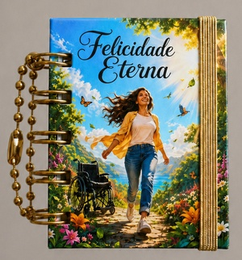
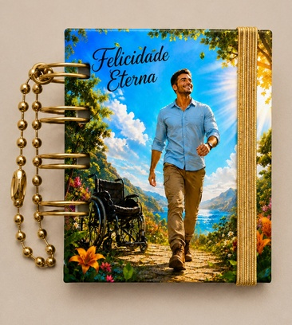
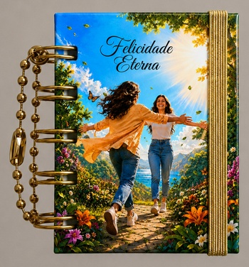
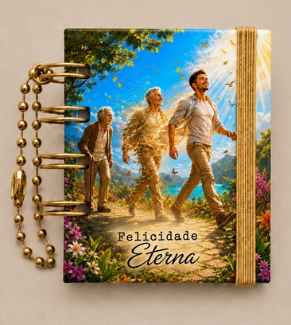
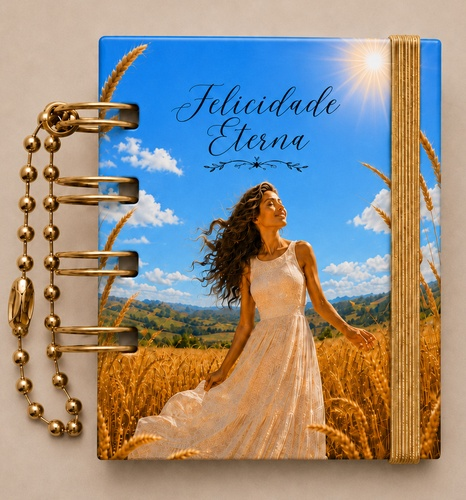
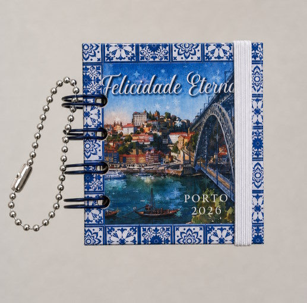
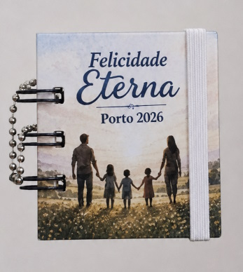
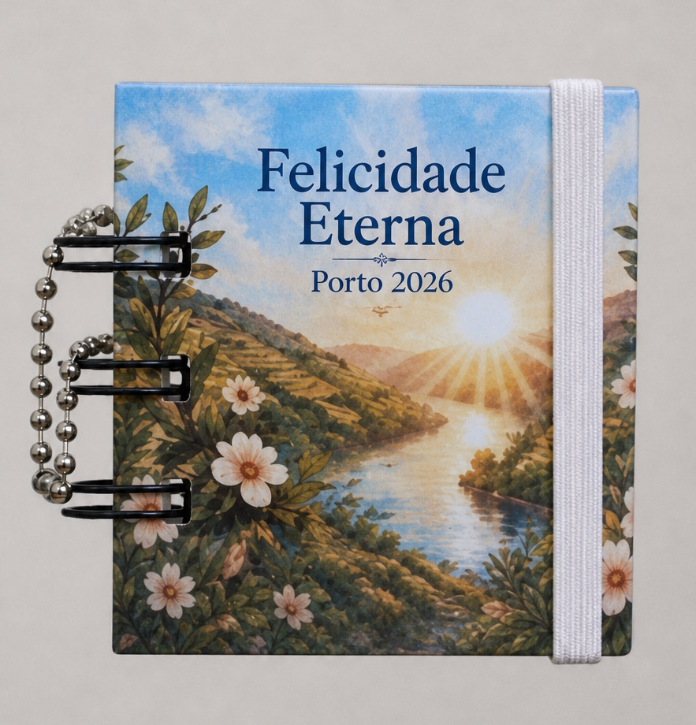
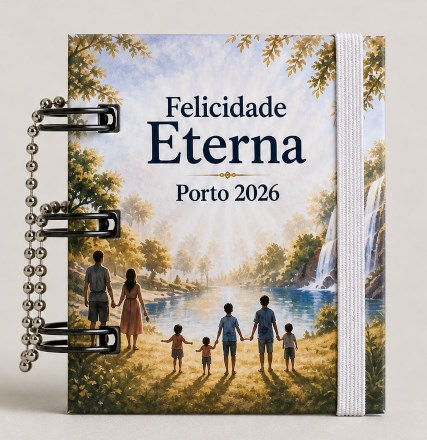

Mini-Cadernos
- 1 mini-caderno4,50 €
- 3 mini-cadernos12,50 €
- 5 mini-cadernos19,50 €
- 10 mini-cadernos36,00 €
- 24 mini-cadernos78,00 €
- 48 mini-cadernos145,00 €
- 96 mini-cadernos280,00 €
Catálogo simples









